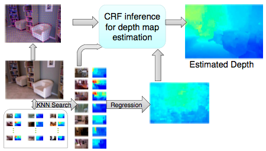
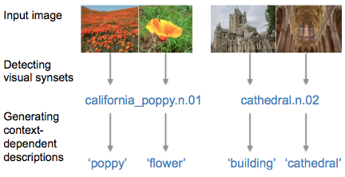
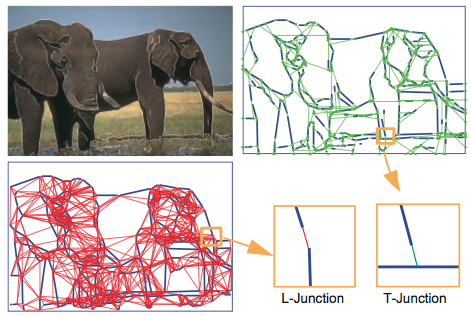
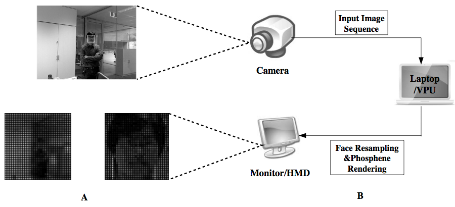
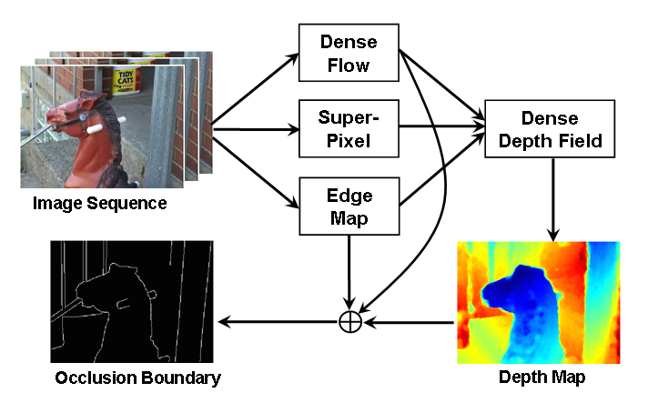
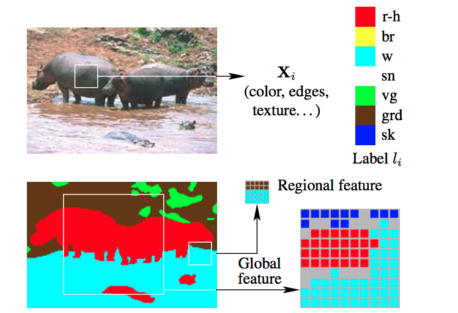

Depth Prediction from Images
|
 |
We tackle the problem of single image depth estimation,
which, without additional knowledge, suffers from many
ambiguities. We introduce a hierarchical
representation of the scene and
formulate single image depth estimation as inference in a
graphical model whose edges let us encode the interactions
within and across the different layers of our hierarchy. Our
method therefore still produces detailed depth estimates, but
also leverages higher-level information about the scene.
|
Wei Zhuo, Mathieu Salzmann, Xuming He, Miaomiao Liu,
Indoor Scene Structure Analysis for Single Image Depth Estimation,
IEEE Conference on Computer Vision and Pattern Recognition (CVPR), 2015
[pdf]
Miaomiao Liu, Mathieu Salzmann, Xuming He,
Discrete-Continuous Depth Estimation from a Single Image,
IEEE Conference on Computer Vision and Pattern Recognition (CVPR), 2014
[pdf]
From Image to Concept
|
 |
We study basic-level categories for describing visual concepts, and empirically observe context-dependant basic-level names across thousands of concepts.
We propose methods for predicting basic-level names using a series of classification and ranking tasks, producing the first large-scale catalogue of basic-level names for hundreds of thousands of images depicting thousands of visual concepts. We also demonstrate the usefulness of our method with a picture-to-word task.
|
Alexander Mathews, Lexing Xie, Xuming He,
Choosing Basic-Level Concept Names using Visual and Language Context,
IEEE Winter Conference on Applications of Computer Vision (WACV), 2015
[pdf] [suppl pdf]
Lexing Xie, Xuming He,
Picture Tags and World Knowledge: Learning Tag Relations from Visual Semantic Sources,
The 21st ACM International Conference on Multimedia (ACM MM), 2013
[pdf]
Contour Detection and Completion
|
 |
Yansheng Ming, Hongdong Li, Xuming He,
Winding Number for Region-Boundary Consistent Salient Contour Extraction,
IEEE Conference on Computer Vision and Pattern Recognition (CVPR), 2013
[pdf]
Yansheng Ming, Hongdong Li, Xuming He,
Connected Contours: a Contour Completion Model That Respects Closure-Effect,
IEEE Conference on Computer Vision and Pattern Recognition (CVPR), 2012
[pdf]
|
Image Understanding for Bionic Eye
|
 |
Xuming He, Junae Kim, Nick Barnes,
An Face-based Visual Fixation System for Prosthetic Vision,
Annual International Conference of the Engineering in Medicine and Biology Society (EMBC), 2012, USA
Tao Wang, Xuming He, Nick Barnes,
Glass Object Localization by Joint Inference of Boundary and Depth,
International Conference on Pattern Recognition (ICPR), 2012
[pdf] [Dataset]
|
Motion Anlaysis
|
 |
Shuang Wu, Xuming He, Hongjing Lu, and Alan Yuille,
A Unified Model of Short-range and Long-range Motion Perception,
Annual Conference on Neural Information Processing Systems (NIPS), 2010, Vancouver, Canada
[pdf]
Xuming He and Alan Yuille,
Occlusion Boundary Detection using Pseudo-Depth,
European Conference on Computer Vision (ECCV), 2010, Greece
[pdf]
|
Image/Scene Labeling
|
 |
Xuming He, and Richard S. Zemel,
Latent Topic Random Fields: Learning Using a Taxonomy of Labels,
IEEE Conference on Computer Vision and Pattern Recognition (CVPR), 2008
[pdf (with Appendix)]
Xuming He, Richard Zemel, and Deb Ray,
Learning and Incorporating Top-down Cues in Image Segmentation,
European Conference on Computer Vision (ECCV), 2006.
[pdf] [Dataset]
Xuming He, Richard Zemel, and Miguel Carreira-Perpinan,
Multiscale Conditional Random Fields for Image Labelling,
IEEE Conference on Computer Vision and Pattern Recognition (CVPR), 2004
[pdf] [Dataset]
|
{kind=link}
{kind=link}
{kind=link}
{kind=link}
{kind=link}
{kind=link}